IMT2200 - ⛔ **La seguridad en Chile del 2011 con respecto a algunos delitos** ⛔
Contexto:
La seguridad en Chile siempre ha sido un tema importante de que hablar y no es para menos, nosotros estamos viviendo en dicho país y nos interesa nuestra propia seguridad. A inicios del año 2011 de Chile, se pudo firmar un decreto que permite la creación de un Ministerio Interior y Seguridad Pública, citando textualmente la función de este Ministerio: ***"Tras cuatro años de tramitación legislativa se firmó el decreto que crea el nuevo ministerio, al cual le corresponderá todo lo relativo a la prevención, el control de la delincuencia, la rehabilitación de los infractores de ley y su reinserción social."*** (Cita sacada de: https://www.interior.gob.cl/sitio-2010-2014/n2196_10-02-2011.html
Podríamos pensar que en ese año, gran parte de los delitos debiesen estar reducidos, ¿Correcto?. Pues ese es el tema de lo que presentará nuestro proyecto, ya que es bastante dudable hoy en día el tema de la seguridad pública en Chile (y eso considerando que el Ministerio ya lleva 12 años), observaremos los datos que ha aportado el Servicio Médico Legal (SML), donde se encarga de generar atenciones a las personas con antecedentes de sexología y le brinda registro a las personas victimas de homicidios durante el año 2011.
Objetivos:
Proporcionar una visión clara y accesible de la seguridad en Chile durante el año 2011, centrándonos en datos sobre los delitos sexuales y en los homicidios que ha brindado el Servicio Médico Legal (SML).
Facilitar la comprensión de cómo se obtienen y analizan los datos relacionados con la seguridad pública en el Chile del 2011.
Responder distintas preguntas internas que se tiene sobre el tema, tales como: ¿Son tan frecuentes estos tipos de casos?, ¿Existe una seguridad por comuna?, ¿El nuevo Ministerio Interior y Seguridad Pública realmente fue efectivo en su año de creación?
💻Preguntas objetivo.💻
Preguntas realizadas en la propuesta:
- ¿Cuál es la distribución cuantitativa de los crímenes cometidos por comunas en Chile durante el año 2011, y cómo varía esta distribución en términos de género de las víctimas y victimarios?
- Comparando los dos datos que se disponen, ¿Podemos identificar una diferencia notoria de casos con connotación sexual del año 2011?, ¿Qué dice la diferencia de los casos con respecto a la transparencia de los datos proveniente del gobierno?
- Revisando nuestros datos, ¿Cuál resulta ser la relación víctima-victimario más frecuente en los casos de connotación sexual durante el año 2011, y cuál sería la menos frecuente respectivamente?, ¿Por qué ocurre eso?
- ¿Podemos identificar que la seguridad para las personas menores a 18 años es realmente segura?, ¿Cuál sería el caso más frecuente realizado hacia los menores de edad, y cuál sería el caso más frecuente realizado por los menores de edad a otros individuos?
- ¿Existe algún crimen que sobresale por encima del resto numéricamente?, ¿Cuál sería la diferencia de casos con los demás delitos?, ¿Por qué se podría deber esto?
Pregunta de la propuesta que pudimos adaptar para el proyecto:
¿Cuál es la distribución cuantitativa de los crímenes cometidos por comunas en Chile durante el año 2011?
Preguntas nuevas (Guías) que surgieron tras realizar el proyecto:
- ¿Cuál sería el caso de connotación sexual más frecuente en el 2011?, mismamente, ¿Cuál sería el homicidio más repitente en el 2011?
- ¿Qué relación podemos ver con la edad y el tipo de crimen?, ¿Cuál sería la varianza estándar de cada tipo de crimen por edad?
- ¿Cuál sería la actividad que presenta mayor cantidad de delitos?, ¿Existe alguna diferencia notoria la actividad de las victimas de connotación sexual con los homicidios?
- ¿Cómo es la cantidad de delitos por cada mes durante Chile en el 2011?, ¿Qué género dispone de mayores victimas?
- Enfocándonos en los casos de connotación sexual, ¿Qué tipo de relación suele tener la víctima con el victimario?
Información con respecto a los datos.
Procedimiento realizado
Todo el proceso realizado en "ETL", se ha hecho primeramente en siguientes JupyterNotebooks:
Se explicará a continuación lo que se hizo en ETL_datos.ipynb para mayor certeza de la información:
- Revisión de datos de sexología y homicidios
- Eliminación de datos nulos (Para ambos casos)
- Reescribir columnas de relación victima-victimario (sexología)
- Reescribir columnas de fechas para que se pueda transformar en datetime
- Cambiar los tipos de algunas columnas para cada DF
- Descarte de columnas sin comunas (para mejor agrupación y no aportan muchos datos)
- Reescritura de la columna de comunas (Apoyo con el DataFrame de comunas)
- Combinación de los dos dataframes a uno sólo (casos_2011.csv)
Cabe mencionar que, en un principio, se tenía planeado usar otro dato aparte que el de **Homicidios**, el cuál era un **cuestionario de la Enusc sobre la Seguridad Pública**, sin embargo, al ver que realmente no daba aportación de datos interesantes ni de columnas nuevas, se ha decidido reemplazarlo.
Descripción de los datos:
Para este proyecto, se utilizará el dataframe llamado "casos_2011.csv", que fue producto de dos dataframe. (Mencionar que se ocupo uno más para la escritura de comunas). Sus datos contienen:
- SEXO (dtype: category)
- EDAD (dtype: int)
- ACTIVIDAD (dtype: object)
- COMUNA DE OCURRENCIA (dtype: category)
- RELACION VICTIMA VICTIMARIO (dtype: object)
- TIPO DE CRIMEN (dtype: category)
- CASO (dtype: object)
- FECHA DE REGISTRO (dtype: Datetime)
Bibliografía de los datos:
- Datos de sexología 2011 - Servicio Médico Legal (SML): https://datos.gob.cl/dataset/5184
- Datos de homicidios 2011 - Servicio Médico Legal (SML): https://datos.gob.cl/dataset/5176
- Datos de comunas (bien escritas) - Minsal: https://repositoriodeis.minsal.cl/ContenidoSitioWeb2020/uploads/2019/11/DPA2018.xls
- Plantilla pagina web usado de https://themefisher.com/products/galaxy-bootstrap
📄Respondiendo Preguntas📄
🔼1.- ¿Cómo es la cantidad de delitos por cada mes durante Chile en el 2011?, ¿Qué género dispone de mayores victimas? 🔼
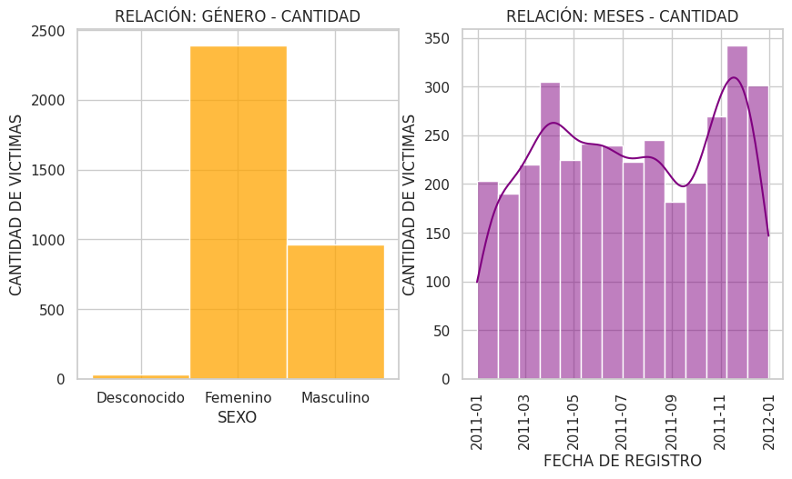❇️ Respuesta ❇️
- En el primer gráfico, podemos observar que el grupo con mayor cantidad de víctimas de crímenes de homicidios y de connotación sexual en el Chile del 2011 son las mujeres.
- En el segundo gráfico, podemos revisar que los meses parecen no tener alguna influencia a la hora de ejecutar crímenes de homicidios y de connotación sexual.
No obstante, podemos realizar una sub-pregunta muy interesante a partir de lo siguiente:
Lo mencionado en el segundo gráfico es meramente una suposición, sin embargo, ¿Realmente no hay una relación a partir de los meses?, para poder realizar la respuesta a esta incógnita, utilizaremos la herramienta de "Regresión Lineal" para ver como se comporta en un entorno matematico y, de esa manera, ver si efectivamente porta alguna relación o no.
🔻(Sub-pregunta) ¿Qué tanto varian los valores de cantidad de victimas por mes?🔻
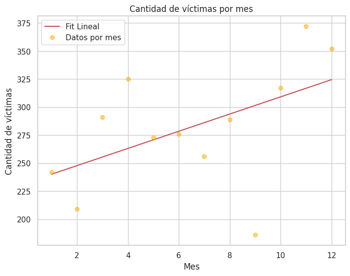❇️ Respuesta ❇️
Con esta Regresión Lineal realizada para la relación de la cantidad de víctimas por mes, podemos identificar que es de manera creciente a través de los meses y realmente parece que si tiene una influencia como tal, aparentemente los casos van creciendo a medida que se acerque hacia el mes de Diciembre del año 2011 en Chile. Con esto podemos pensar en lo siguiente:
- Los casos van aumentando a medida que cambiamos de mes.
Preguntas realizadas a partir de esta sub-pregunta:
- ¿Serán los mismos datos para las víctimas menos de 18 años de edad?
- Disponemos del conocimiento que los últimos 2 meses, disponen de mayores cantidad de víctimas, ¿Acaso las vacaciones tienen algo que ver?, y si ese es el caso, ¿Por qué es tan bajo en los dos primeros meses?
- Si el Ministerio Interior y Seguridad Pública se aprobó en febrero del 2011, podemos ver que si afecto en algo por la cantidad de víctimas en ese período, sin embargo, ¿Por qué aumentaron tan drásticamente al cambiar de mes?
Nos centraremos en responder las 2 sub-preguntas nacidas a partir de esta respuesta, la de las vacaciones eligiendo a las víctimas menores de 18 años de edad, por la principal razón de que es un grupo muy vulnerable a estos crimenes, de esta manera podremos concluir muchas más cosas. Además que la pregunta sub-pregunta del Ministerio quedaría sin resolver por falta de datos al respecto, pero sigue siendo muy interesante el cuestionarlo.
🔻(Sub-pregunta) ¿Como varian los valores por víctima por mes para los menores de 18?, ¿Se ven perjudicados por los meses de vacaciones?🔻
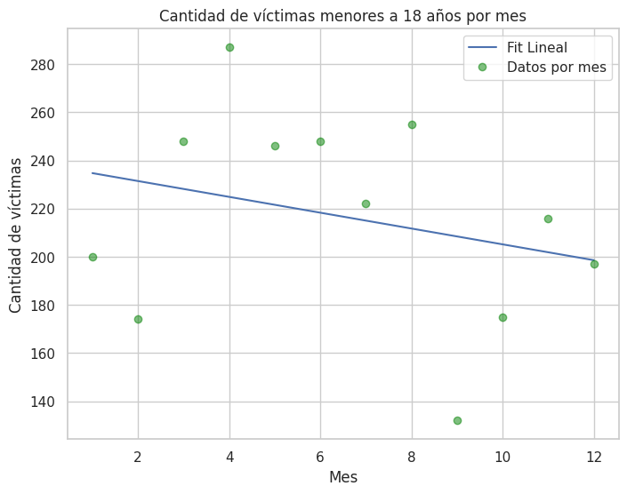❇️ Respuesta ❇️
De esta otra Regresión Lineal, podemos responder muchas dudas generadas en la anterior sub-pregunta y las conclusiones serán las siguientes:
- Los casos de víctimas menores a 18 años por mes, van de manera decreciente, entonces la centralización de los casos en los 2 últimos meses se deben a las víctimas mayores de 18 años de edad, sin embargo, las víctimas menores a 18 años disponen de una gran cantidad de casos en los meses 3 y 4, justamente cuando inician las clases en el ciclo escolar.
- Las vacaciones parecen ser de un entorno mucho más seguro para estas personas, ya que los casos disminuyen.
Como resultado, identificamos que el año escolar fue realmente es el entorno más vulnerable para estos tipos de crímenes en el Chile del 2011, ya que una alta tasa de estos casos radica desde Marzo hasta Agosto.
🔼2.- ¿Cuál es la distribución cuantitativa de los crímenes cometidos por comunas en Chile durante el año 2011? 🔼
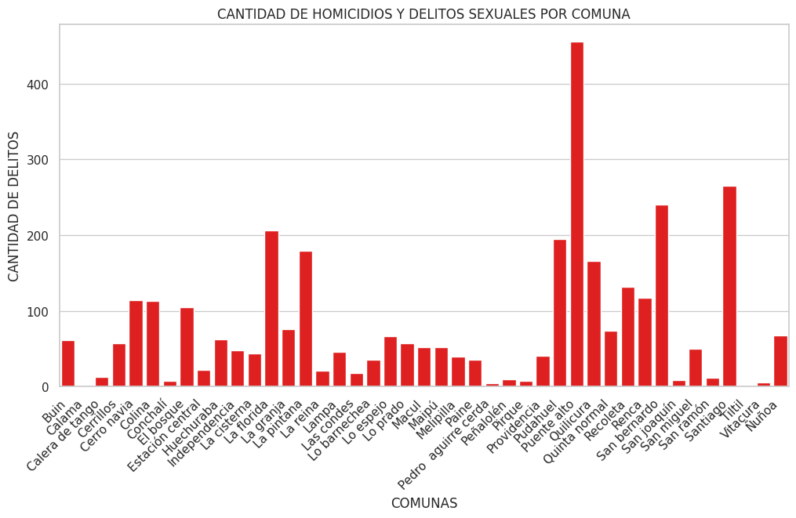❇️ Respuesta ❇️
A partir de este gráfico podemos concluir diversas cosas, en las que destacan:
- La comuna con mayor cantidad de delitos es Puente Alto, con más de 400 delitos.
- Muchas comunas presentan menos de 100 delitos. ¿Consideramos eso como seguro?
Sin embargo, a partir de aquí, podemos preguntarnos otras cosas, como por ejemplo:
- ¿Cuáles serían las comunas con menos cantidad de delitos según la SML?
- ¿La cantidad de delitos por comuna varía por distinción de género?
- ¿Existe alguna relación entre los crímenes de connotación sexual con los homicidios?
🔻 *(Sub pregunta) ¿Cuáles serian las tres comunas con menos delitos en Chile en el año 2011?, ¿Por qué sucede esto?* 🔻
❇️ Respuesta ❇️
| Comuna de Ocurrencia | Cantidad de Casos |
|---|---|
| Calama | 1 |
| Tiltil | 1 |
| Pedro Aguirre Cerda | 5 |
Con esta información, concluimos lo siguiente:
- Aparentemente, las 2 comunas con menos delitos registrados en el SML, serían Calama y Tiltil, seguidamente de Pedro Aguirre Cerda.
- Puede que el SML no reciba muchos pacientes de estas comunas.
🔻 *(Sub-pregunta) ¿Cuál sería la relación estadística entre los crímenes de connotación sexual y los casos de homicidios?* 🔻
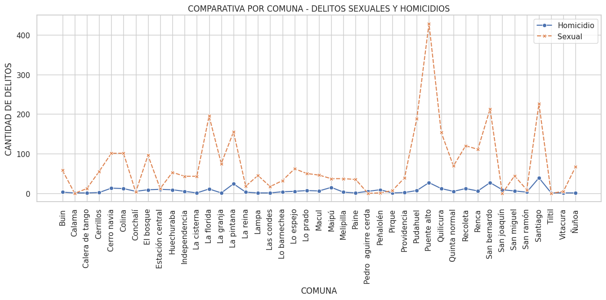❇️ Respuesta ❇️
Tras revisar el gráfico realizado, podemos deducir lo siguiente:
- Parece que si existe una relación de delitos sexuales con los homicidios, puesto que gran parte de las comunas que presentan grandes cantidades de delitos sexuales, presentan algún que otro homicidio sucedido. Esto se refleja más con aquellas que comunas que sobrepasan los 100 delitos sexuales.
- Puente Alto queda como la comuna con más casos sexuales durante el Chile del 2011 y el segundo con más homicidios, sólo por debajo de Santiago.
🔻 *(Sub-pregunta) ¿Cómo se vería la cantidad de delitos por comuna con una distinción de género?* 🔻
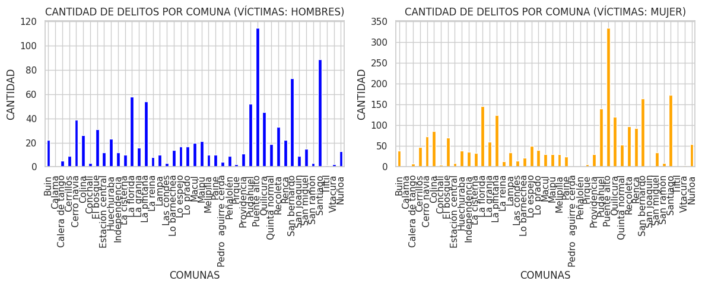❇️ Respuesta ❇️
A partir de estos dos gráficos, notamos que la diferencia no es muy grande, por ende, podemos concluir que:
- Aparentemente la distinción de género no afecta mucho al resultado de las comunas más peligrosas, ya que son bastante parecidas entre sí.
- Las mujeres disponen de mayor cantidad de víctimas, siendo aproximadamente el doble que los hombres.
🔼3.- ***¿Qué relación podemos ver con la edad y el tipo de crimen?, ¿Cuál sería la varianza estándar de cada tipo de crimen por edad?*** 🔼
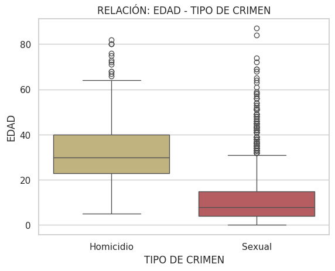❇️ Respuesta ❇️
A partir de este gráfico podemos concluir diversas cosas, en las que destacan:
- identificamos que el rango de las víctimas de homicidios tiene una preferencia de edad en los 20-40 años, curiosamente, el rango de las víctimas de delitos sexuales suelen estar entre 0-20 años. En otras palabras, las víctimas de homicidios suelen ser más adultos y las víctimas de delitos sexuales suelen ser mucho más jovenes.
❇️ Respuesta ❇️
- adentrándonos en los grupos etarios, encontramos más especifico la edad de preferencia que tienen los delincuentes. El grupo etario más vulnerable a delitos sexuales serían los que se encuentran desde los 0-9 años de edad, y el grupo más vulnerable a homicidios, sería el grupo etario de 20-29 años de edad. (Mencionar que el grupo etario en general, presenta una varianza del 169.21)
Aunque también surgieron más dudas a partir de esto, como por ejemplo:
- ¿Cuál resulta ser la edad promedio de las victimas de los crimenes para hombres y mujeres?
- ¿Qué comuna podría presentar la mayor cantidad de casos en el grupo etario más vulnerable?, ¿Será la comuna con mayor cantida de crimenes?
🔻 *(Sub-pregunta) ¿Cuál es la edad promedio por crimenes sexuales y homicidios para hombres y para mujeres? ¿hay algun cambio interesante entre las dos?* 🔻
| Casos | Edad Promedio |
|---|---|
| Homicidio - H | 32.97 |
| Homicidio - M | 38.00 |
| Sexual - H | 7.886598 |
| Sexual - M | 12.493197 |
❇️ Respuesta ❇️
A partir de este gráfico podemos concluir diversas cosas, en las que destacan:
- La edad promedio de los casos de mujeres para homicidios sería 38 años, y para delitos sexuales sería 12 años de edad. Con respecto a los hombres, la edad promedio en homicidios sería de 33 años, y en delitos sexuales sería de 8 años de edad
- En los homicidios y delitos sexuales, se puede observar que el promedio de las mujeres, suelen tender a promediar 4-5 años por encima de los hombres.
🔻 *(Sub-pregunta) ¿Qué comuna contiene la mayor cantidad de gente en el grupo etario más vulnerable?, ¿Es la comuna con mayor cantidad de crimenes?* 🔻
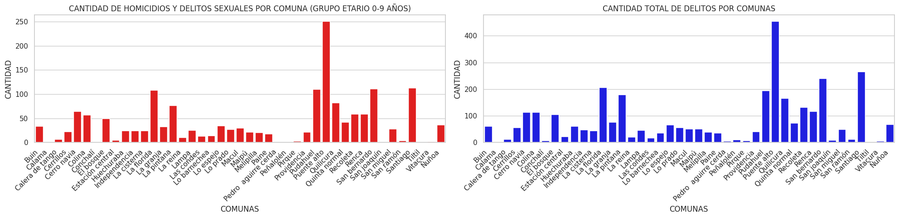❇️ Respuesta ❇️
Con esta comparativa, concluimos lo siguiente:
- La comuna que más dispone de casos con el grupo etario más vulnerable (0-9 años de edad), es misma que tiene la mayor cantidad de delitos en todas las comunas, es decir, Puente Alto.
🔼4.- ***¿Cuál sería el caso de connotación sexual más frecuente en el 2011?, mismamente, ¿Cuál sería el homicidio más repitente en el 2011?*** 🔼
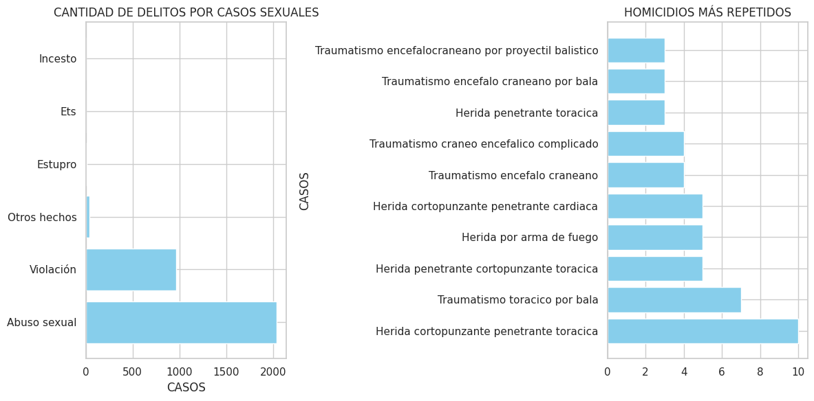❇️ Respuesta ❇️
A partir de estos dos gráficos podemos observar la cantidad númerica en general, por ende, concluimos lo siguiente:
- El tipo de delito sexual más frecuente sería el Abuso Sexual, con más de 2000 casos.
- El tipo de homicidio más frecuente sería la Herida cortopunzante penetrante toracica.
No obstante, podemos identificar una pregunta al respecto:
- Luego de ver la frecuencia de los delitos, ¿Cambiará con la distinción de género?
🔻 *(Sub-pregunta) ¿Cuál fue el homicidio mas repitente para mujeres? ¿Difiere en el caso del hombre?* 🔻
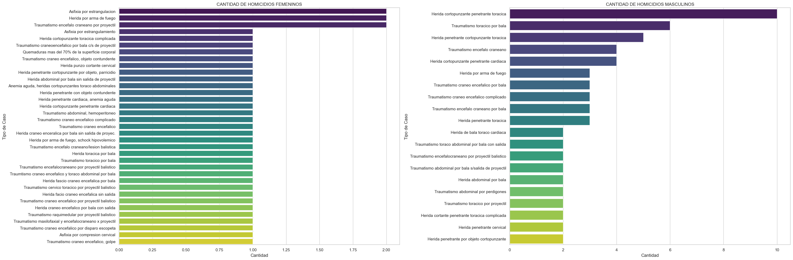❇️ Respuesta ❇️
Con esta comparación de género, podemos notar una diferencia clara, por ende, concluimos lo siguiente:
- Los homicidios por asfixiamiento y armas de fuego tienden a ser mucho más comunes en mujeres, mientras que, para los hombres, es más común que sea por armas cortapunzantes.
- Las mujeres disponen de más variedad de homicidio que los hombres.
🔻 *(Sub-pregunta) ¿Cuál fue el delito sexual más frecuente para hombres y mujeres?* 🔻
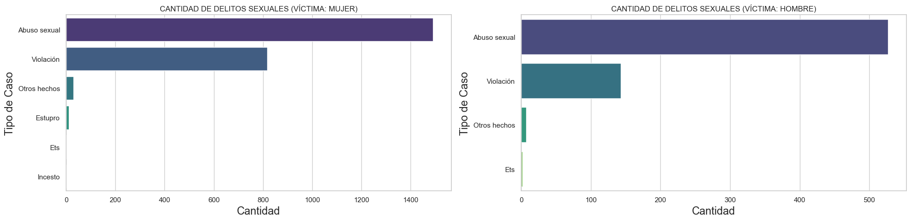❇️ Respuesta ❇️
Con esta comparación de género, notamos bastante similitud y por ende, concluimos que:
- Los hombres y mujeres disponen del mismo delito sexual más frecuente, que es el abuso sexual.
- Las mujeres tienen casos de Incesto y Estupro, cosa que no existe en el caso de los hombres.
🔼5.- 🔼 ***¿Cuál sería la actividad que presenta mayor cantidad de delitos?, ¿Existe alguna diferencia notoria la actividad de las victimas de connotación sexual con los homicidios?*** 🔼 🔼
| # | Comuna de Ocurrencia | Cantidad de Crímenes |
|---|---|---|
| 1 | Puente Alto | 455 |
❇️ Respuesta ❇️
A partir de estos dos gráficos podemos identificar lo siguiente:
- Los estudiantes tienden a ser las víctimas más comunes de los crímenes sexuales y la gente que no presenta ninguna actividad al momento, son las que sufren más homicidios
Sin embargo, estos gráficos nos da el paso para brindarnos nuevas sub-preguntas como:
- En los estudiantes, ¿Cuál sería la edad más frecuente en los delitos en general?
- Si solo nos centramos en algunos casos de delitos sexuales, cambia en algo la tabla?
🔻 *(Sub-pregunta) En el caso de los estudiantes, ¿Cuales son las edades que más se repiten tanto en homicidios, como en crimenes sexuales?* 🔻
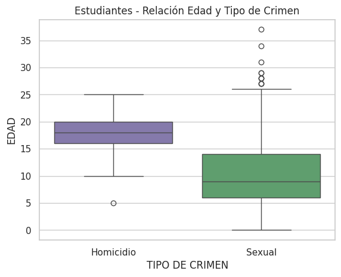❇️ Respuesta ❇️
A partir de este boxplot, concluimos que:
- Notemos que, en el caso de los estudiantes, los homicidios tienden a darse para los jóvenes de alrededor de los 15-20 años de edad y, los delitos sexuales, suelen darse para los jóvenes con 5-15 años de edad.
🔻 *(Sub-pregunta) ¿Si nos centramos en diferentes crimenes sexuales cambia la tabla?* 🔻

❇️ Respuesta ❇️
A partir de esta comparativa de gráficos de Violación y Abuso Sexual, notamos que:
- La diferencia radica en que aquellos que no tienen ningun oficio y los empleados tienden a sufrir más violaciones que abusos sexuales, también observamos que en el gráfico de abuso sexual, los pre-escolares y los que no tienen ninguna actividad/oficio, presentan más abusos sexuales que violaciones. Sin embargo, seguimos manteniendo que los estudiantes son los mas afectados en ambos casos.
🔼5.- ***Enfocandónos en los casos de connotación sexual, ¿Qué tipo de relación suele tener la victima con el victimario?*** 🔼
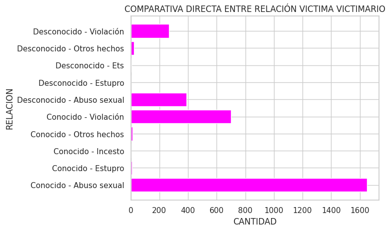 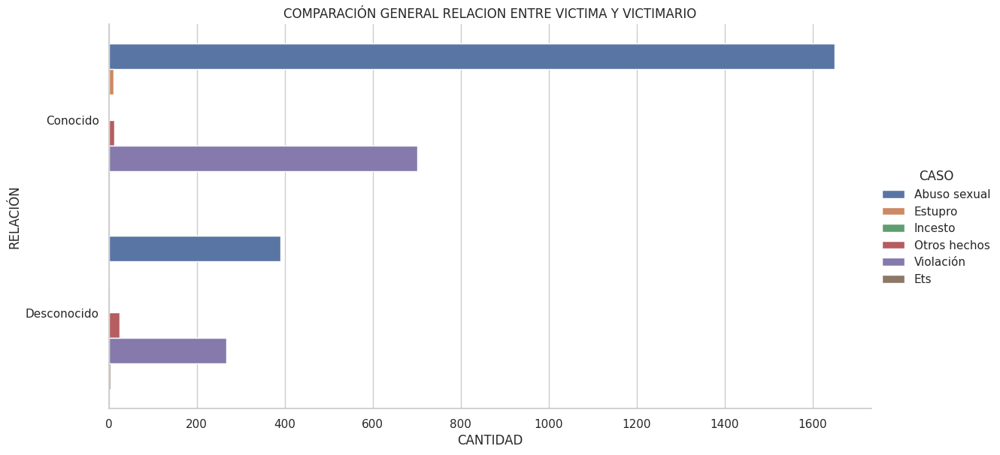❇️ Respuesta ❇️
A partir de esta comparativa de gráficos de Conocidos y Desconocidos, obsevamos que:
- En el caso de los conocidos, el 'Abuso Sexual' es el caso más frecuente con más de 1600 delitos. En el caso de los desconocidos, el 'Abuso Sexual' también es el caso más frecuente, pero con un aproximado de 400 casos.
Ahora nos quedamos con incógnitas tales como:
- Observamos distintos casos pero, ¿Cuál es la edad más repitente para conocidos y desconocidos?
- ¿Qué comunas tienen la mayor cantidad de conocidos y desconocidos cometiendo abusos?
- Con una asignación de género, ¿Varia la tabla?
🔻 *(Sub-pregunta) En el caso general, ¿Cuál es la edad mas repitente?* 🔻
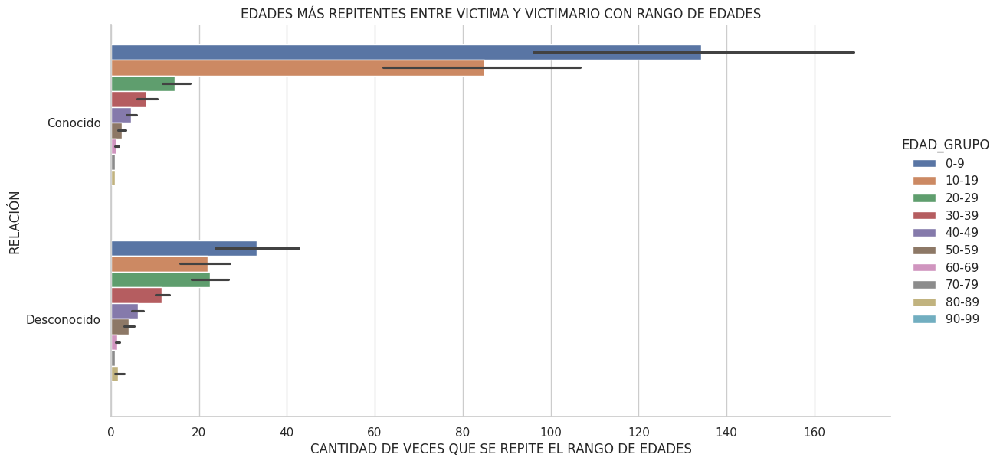❇️ Respuesta ❇️
Al realizar este gráfico por grupo etario, obsevamos que:
- En el caso de conocidos, notamos que la edad más repitente es el de 0-9 años de edad y, en el caso de los desconocidos, curiosamente también la edad más repitente es de 0-9 años de edad, sin embargo, presenta una cantidad mucho menor y esta muy cerca con el grupo de 10-29 años de edad.
- Notamos que gran cantidad de pédofilos esta en el caso de conocidos.
🔻 *(Sub-pregunta) ¿Qué comunas tienen la mayor cantidad de conocidos donde se cometieron abusos?, ¿Qué sucede con el caso de los desconocidos?* 🔻
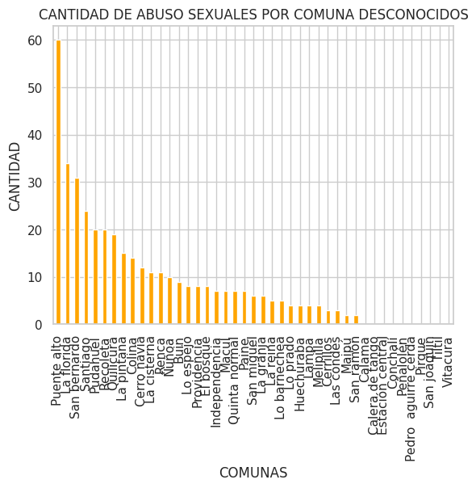 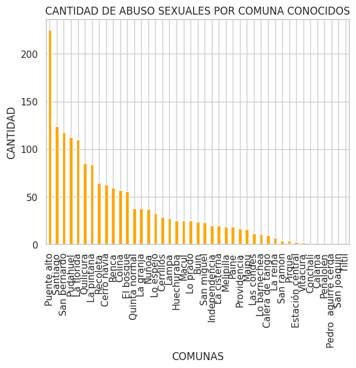❇️ Respuesta ❇️
Al realizar este gráfico por comuna con abuso sexual, obsevamos que:
- Puente Alto predomina por encima del resto, tanto para desconocidos como conocidos.
- En el caso de los desconocidos, la Florida es el 2do lugar con los delitos y, en el conocidos, Santiago se queda en el 2do lugar con los delitos.
🔻 *(Sub-pregunta) ¿Cómo varia la tabla si asignamos el género de la víctima?* 🔻
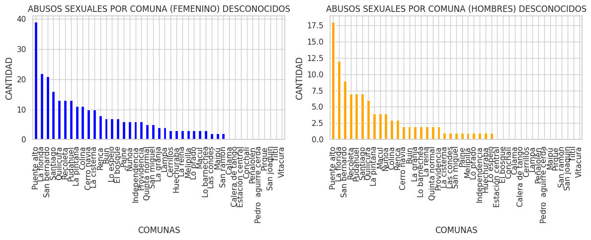 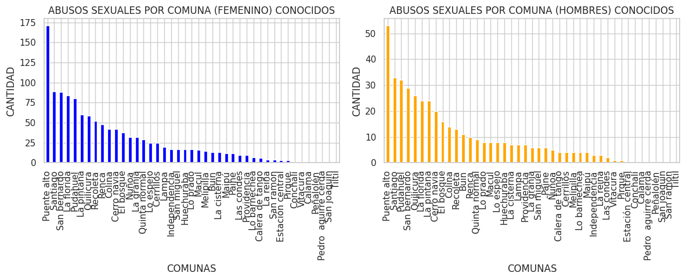❇️ Respuesta ❇️
Al realizar este gráfico por comuna con abuso sexual, tanto como por conocidos y desconcocidos y con distinción sexual, obsevamos que:
- En el caso de los conocidos (Abusos Sexuales), la distinción de hombres y mujeres realmente se mantiene similares, a excepción de que en el caso femenino, la tercer comuna con más casos de abuso sexual es San Bernando, cosa que difiere con la tercer comuna de los hombres, que es Pudahuel. En el caso de los desconocidos, presentan una similitud entre sí bastante alta por comuna, especialmente en las tres primeras comunas.
👥Resumen de los resultados.👥
Con respecto a este análisis y usando los datos del **Servicio Médico Legal (SML)**, hemos sacado muchísimas conclusiones que nos permiten evaluar la seguridad de Chile del 2011, tales como:
- 🟢 La edad promedio de las víctimas de homicidio del sexo femenino es de 38 años y, para las víctimas de delitos sexuales, es de 12 años, a diferencia de la edad promedio en víctimas de homicidios del sexo masculino, que resulta ser de 33 años de edad y, para las víctimas de delitos sexuales, es de 8 años de edad
- 🟢 Cuando la relación entre víctima y victimario es de conocidos, los casos de abuso sexual frecuentan más de 1600 delitos, en donde, el rango de edad más repitente resulta ser de 0 a 9 años y, en el caso de que la relación sea de desconocidos, la cantidad de delitos son aproximadamente 400, en donde, el rango de edad más repitente sigue siendo de 0 a 9 años, pero con mucha menor cantidad.
- 🟢 Las víctimas más comunes en delitos de connotación sexual son los estudiantes dentro de un rango de edad entre los 5 y 15 años, con respecto a las víctimas más frecuentes de los delitos de homicidios, suelen ser los jóvenes entre 15 a 20 años de edad que, al momento del acto, no se encontraba en ninguna actividad/oficio.
- 🟢 El delito sexual más frecuente reportado, tanto para hombres como para mujeres, es el de abuso sexual, con más de 2000 casos registrados.
- 🟢 El tipo de homicidio más frecuente en general, es la herida cortopunzante penetrante torácica. Si lo asignamos por género, los homicidios por asfixiamiento y armas de fuego son los tipos de homicidios más comunes en las mujeres, en cambio, en los hombres el más común es por armas cortopunzante.
- 🟢 La comuna con la mayor cantidad de delitos según el Servicio Médico Legal en Chile del 2011, sería Puente Alto. Puente Alto se presenta como la comuna con mas delitos sexuales en Chile del año 2011 y en segundo con respecto a cantidad de homicidios.
- 🟢 El rango de edad más común de las víctimas de los delitos de connotación sexual, suelen ser de 0 a 20 años de edad y, el rango etario más común de los homicidios respectivamente, sería de 20 a 40 años de edad. Podemos concluir que las víctimas de los casos sexuales son mayoritariamente jóvenes, en cambio, las víctimas de los homicidios suelen ser personas adultas.
- 🟢 Con respecto al género de la víctima, hubo una mayor cantidad de crímenes de connotación sexual hacia el género femenino que al género masculino, en donde la diferencia es más de el doble.
🦺 Medidas de Seguridad 🦺
Ante este análisis de seguridad, hemos decidido realizar distintas medidas de seguridad que permitan mayor concientización, tales como:
- 🟡 *El Ministerio Interior y Seguridad Pública debiese incrementar la seguridad en términos de cámaras, agentes mobiliarios, seguridad comunitario, entre otros. (En particular en "Puente Alto", ya que ha demostrado tener una mayor cantidad de crímenes).*
- 🟡 *En el análisis realizado, hemos notado que la mayoría de los casos es por gente "conocida", por ende, se debe dar mayor oportunidad para exponer el tipo de crimen de manera sutil.*
- 🟡 *Incrementar la seguridad en los sectores cercanos a los colegios, ya que gran parte de los crímenes son a menores de edad, más específicamente, a estudiantes.*
- 🟡 *Base de Datos y Análisis Continuo: Mantener actualizada una base de datos sobre incidentes criminales podría ayudar a identificar patrones emergentes y ajustar las medidas de seguridad en consecuencia.*
- 🟡 *Programas de concientización: dado que hay crímenes reportados entre personas conocidas, programas de concientización sobre la importancia de establecer límites y reconocer situaciones de riesgo podrían ser útiles*
- 🟡 *Asesoramiento profesional: proporcionar recursos de apoyo y asesoramiento a víctimas en sectores como psicopedagogía y otras actividades donde se reporten crímenes.*
⚠️ ¿Qué podría salir mal? ⚠️
Nos enfocaremos en "¿Qué podría salir mal?" con respecto a las **Medidas de Seguridad** planteadas en el punto anterior:
- 🛑 Cuando una comuna dispone de mayor seguridad, el crimen simplemente podría moverse a las comunas vecinas y ejercer la delincuencia ahí.
- 🛑 La manera sutil se va volviendo menos sutil con más usos, negando a las personas la oportunidad de contar que sufrieron un crimen de manera segura y cómoda.
- 🛑 Una gran cantidad de seguridad en los colegios, puede llevar a un descuido de otros sitios, haciendo que el problema simplemente se vaya trasladando a otros lugares.
- 🛑 Esta base de datos se podria usar con fines maliciosos y de aprovechamiento del sector, por ejemplo, si una persona esta en una comuna catalogada como "segura", podrá aumentar el valor de su propiedad, aprovechando el temor de la sociedad ante la delincuencia.